Data Analytics presents a slightly different variation of a User Story, being that the customer request is not a physical product but an offering, mostly one that amounts to a business performance review. It features the customer's business request or questions, and the answers obtained by the analyst throughout the research. It also presents the optimization strategy proffered by the analyst and the performance summaries expressed as charts and dashboards for attractive visualization.
TABLE 1: ROXY BDC USER STORIES
| KEY QUESTION | ANSWER/INSIGHT | ACTION/OPTIMIZING STRATEGIES |
|---|---|---|
| Who are the most likely customers to buy FOREX? | Businessmen and private travellers | market more students by sending fliers to study-abroad fairs |
| When are the peak sales periods including hidden trends? | July/August - Summer Holidays and The Hajj fetival | Increase private vendor purchases during the festive seasons to ensure customer retention |
| What is the average weekly sale per customer? | About $5700 per customer | Strategic marketing |
| What is the average yearly buy in dollars? | About $2.5m from all vendors. | Increase private vendor purchases during the largely celebrated festive holidays |
| Are sales increasing from one year to the next? | Yes. There's an 8% growth in sales and a correpondimg 10% growth in profit in the 2nd trading year. | Strategic marketing |
| Why are sales increasing from one year to the next? | Increased weeks of trading, more customers | Optimize trading weeks |
| Are we getting new customers? | Yes. Customer base recorded a 20% growth in the second trading year | Strategic marketing |
| How did most customers hear about us? | Mostly through Fliers followed by Office Signboards and then through staff | Put signboards in more conspicuous places |
| Is our marketng strategy good? | It could be optimised further | Allot staff members to departments based on their hobbies and performance as opposed to academics |
| What percentage of customers are foreigners? | 20% of customers are foreigners | Do more TV/radio advertisements |
| How can we increase customer base? | Strategic marketing | Make fliers available at conferences in the area |
STATISTICS
Statistics are figures calculated from analyses of datasets. These figures summarise the whole of the dataset they represent or a characteristic of it and can be in group form or in singular form
Statistics are categorised into two main groups: descriptive and inferential statistics. Descriptive Statistics describe the central tendaency, the dispersion or the skewness of a dataset eg the mean or the mode; while Inferential Statistics makes inferences about population from small datasets and predict future possible outcomes. An example is the T-test.
DATA ANALYTICS
Analytics is the sytematic analysis of data or statistics for the discovery, interpetation and communication of useful insights and meaningful pattern. They are grouped into four main categories being: descriptive, diagnostic, prescriptive and predictive. Each user story fits under one of such groupings and it is necessary to know which one it is. The table below places each user story in its appropriate group and also describe their SQL queries using thumbnail images which popup into full-size images upon clicking.TABLE 2: BDC ROXY KEY SQL QUERIES
| KEY QUESTION | SQL QUERIES | SQL RESULTS | DATA ANALYTICS |
|---|---|---|---|
| Who are the most likely customers to buy FOREX? | 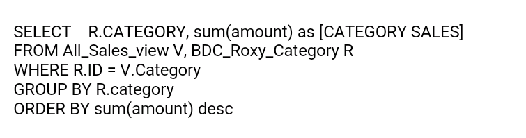 | 
| Descriptive |
| When are the peak sales periods including hidden trends? | 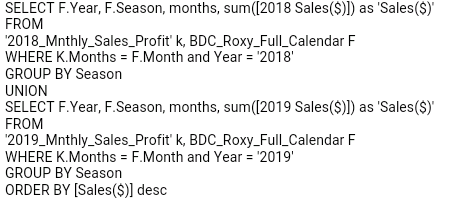 |  | Descriptive |
| What is the average weekly sale per customer? | 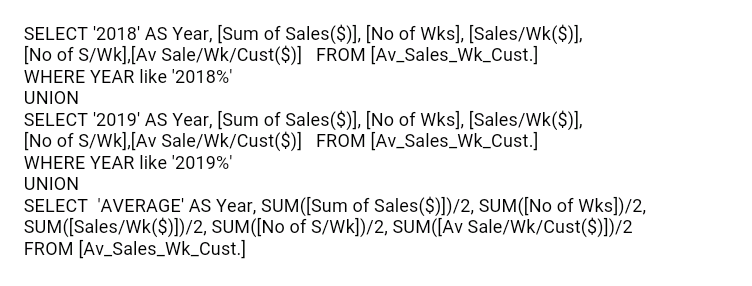 | 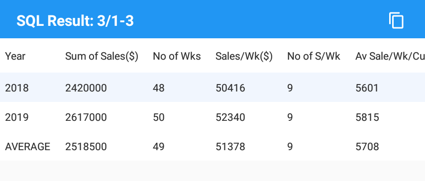 | Descriptive |
| What is the average yearly buy in dollars? | 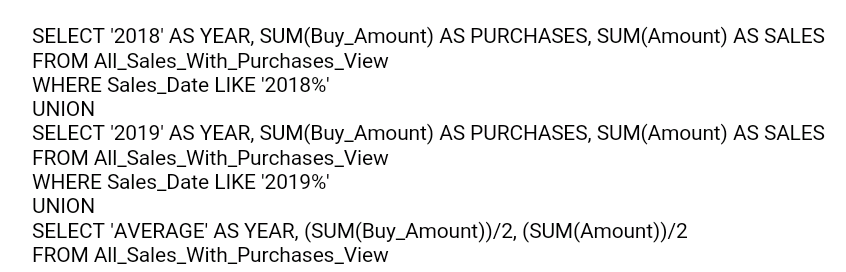 |  | Descriptive |
| Are sales increasing from one year to the next? | 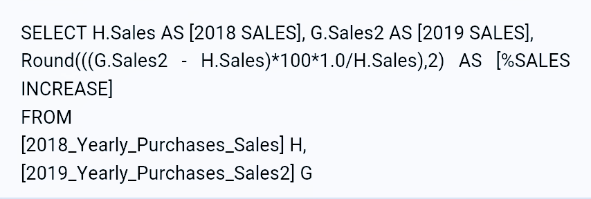 | 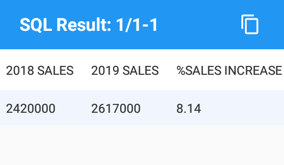 | Descriptive |
| Why are sales increasing from one year to the next? | 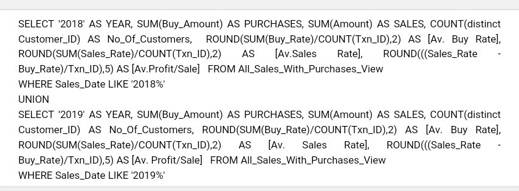 |  | diagnostic |
| Are we getting new customers? | 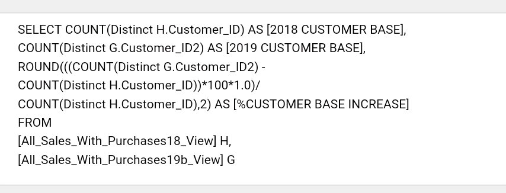 | 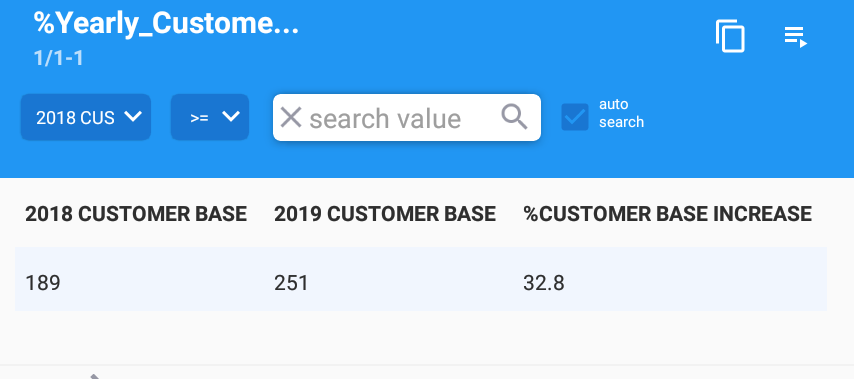 | Descriptive |
| How did most customers hear about us? | 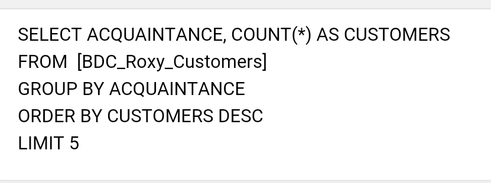 |  | Descriptive |
| Is our marketing strategy good? | 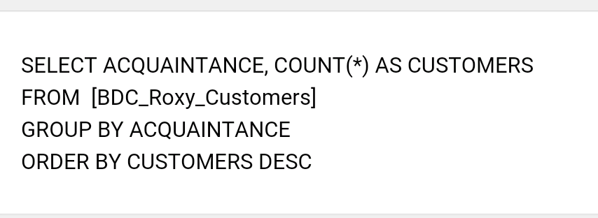 | 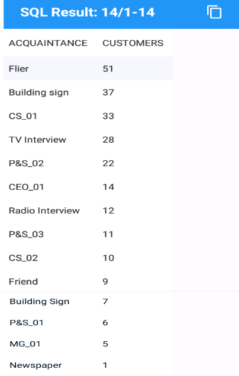 | Descriptive |
| What percentage of customers are foreigners? | 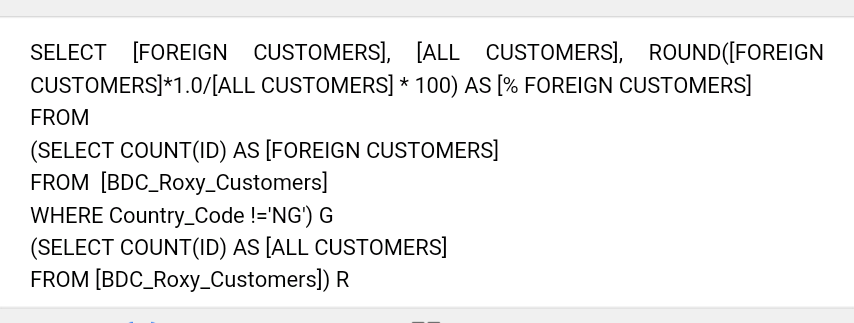 | 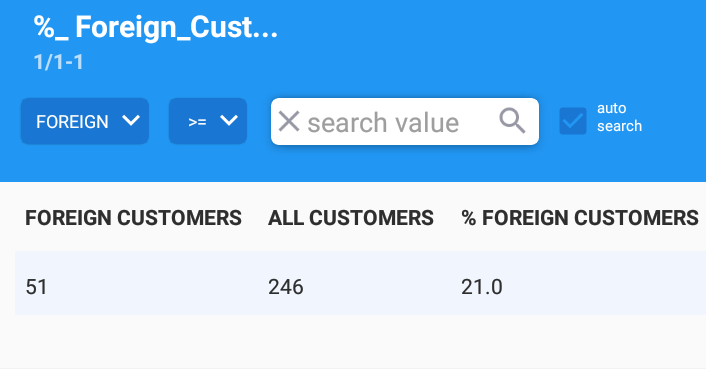 | Descriptive |
| How can we increase customer base? |  | Prescriptive |
KEY PERFORMANCE INDICATORS
Key Performance Indicators are analytics that describe how businesses are performng based on their chosen benchmarks. The above research has revealed Roxy's key performance indicators to be:
- Customer Category
- Customer Names
- Customer Nationality
- Weekly Sales and Purchases
- Yearly Sales and Purchases
- Quarterly Sales
- Average Estimates
- Acquaintance
- Staff Names